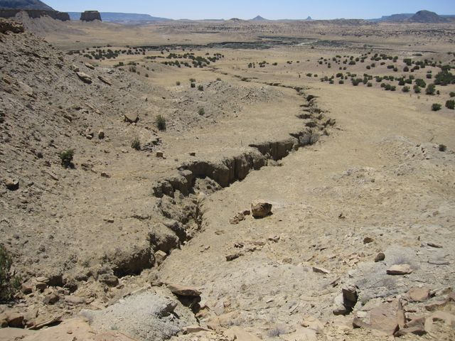
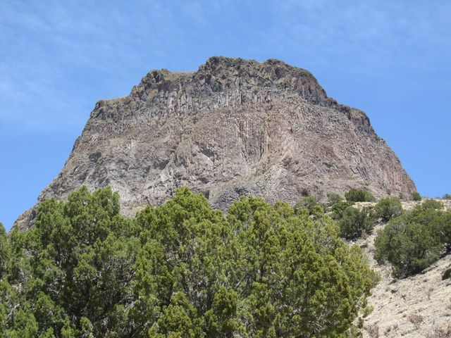
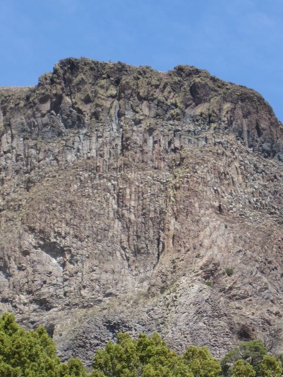
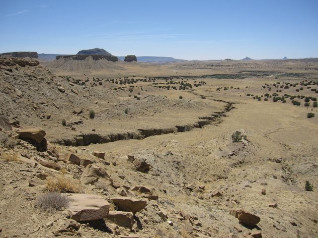
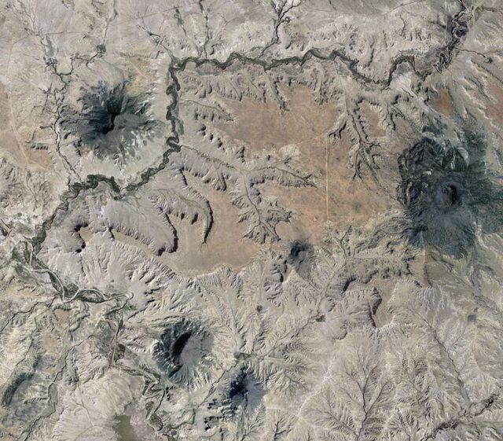

Skip to content
Helge Gonnermann
Volcanoes, Magmatic Processes, Fluid Flow
Menu
Home
Research
Publications
Lab
People
Field Trips
Opportunities
CV / Contact
← All field trips
Rio Puerco, May 2013
6 photos
Rio Puerco Volcanic Necks/Plugs

Gully Incision

Columnar Jointing

Columnar Jointing

Rio Puerco Landscape

Aerial View from Google